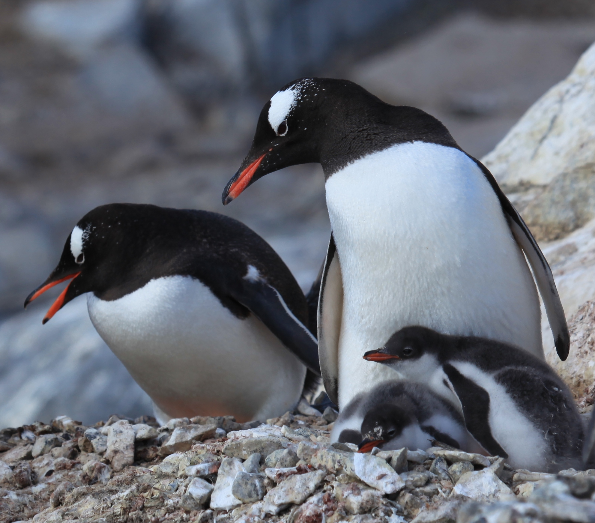

Penguin Pictures!
{kind=link}

Root beer is a nice drink. Right now it is night and I am tpying content for this assignment. Guess what. What? Chicken butt. My glasses is black and green. The sofas are black and white. There is an apple macbook right be side me. Apple decided to remove the 3.5mm audio jack which was a really bold move that many people did not like. Penguins are very cute and are my favourite animals. I decided to bring my laptop to the dining room because I do not want to be in my room. I bought a text book for 40 dollars to share with a friend in the same course. The same friend bought me a jacket to repay for the book. I had a Jimmy the Greek for dinner and it was quite enjoyable.
Root beer is a nice drink. Right now it is night and I am tpying content for this assignment. Guess what. What? Chicken butt. My glasses is black and green. The sofas are black and white. There is an apple macbook right be side me. Apple decided to remove the 3.5mm audio jack which was a really bold move that many people did not like. Penguins are very cute and are my favourite animals. I decided to bring my laptop to the dining room because I do not want to be in my room. I bought a text book for 40 dollars to share with a friend in the same course. The same friend bought me a jacket to repay for the book. I had a Jimmy the Greek for dinner and it was quite enjoyable.